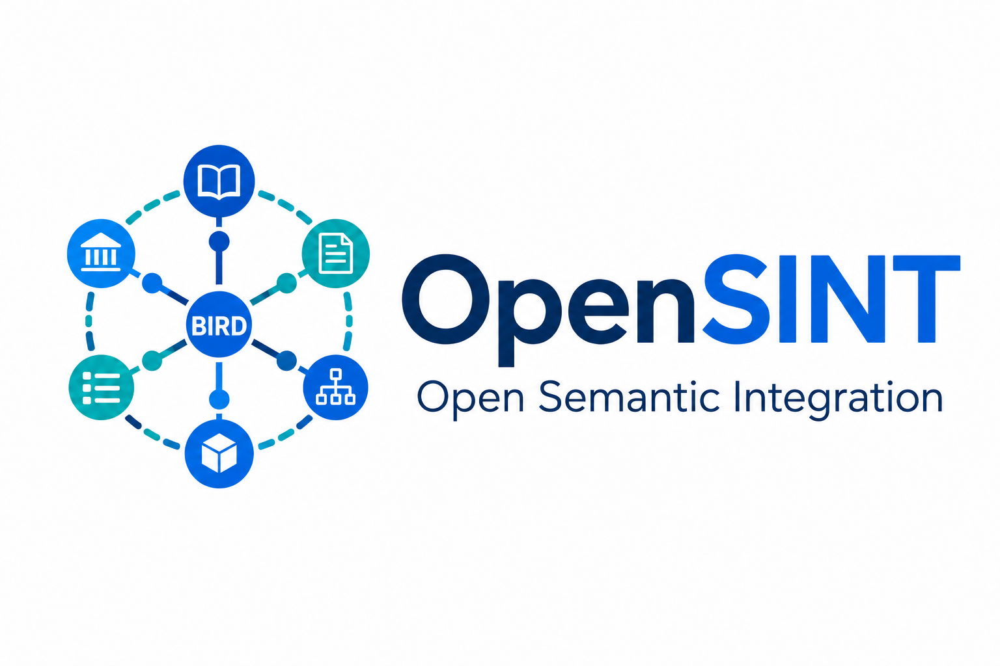
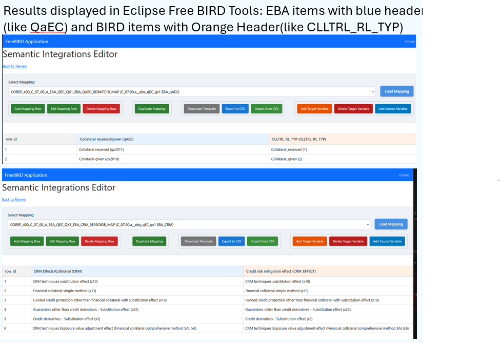

OpenSINT
Open Semantic Integration for regulatory reporting
AI-assisted, BIRD-aligned semantic integration: open mappings, open tooling and executable validation.
OpenSINT is an open initiative for turning fragmented regulatory definitions, dictionaries and reporting artefacts into a reusable semantic core aligned with BIRD standards.
It combines AI-assisted mapping, open CSV/SMCubes-style artefacts, human review and executable validation through Eclipse Free BIRD Tools.
The aim is to make regulatory semantic harmonisation open, measurable and testable.
Why OpenSINT?
Regulatory reporting frameworks often contain overlapping, duplicated or inconsistent definitions. This creates avoidable complexity for authorities, banks, vendors and reporting specialists.
OpenSINT addresses this by focusing on two objectives:
-
Converge existing reporting definitions
Map today’s regulatory reporting data elements to a reusable BIRD-aligned semantic core.
-
Prevent future divergence
Provide tooling, review processes and measurable feedback so that new requirements can be added without unnecessary semantic duplication.
What OpenSINT provides
OpenSINT provides open artefacts and methods for semantic integration:
- Candidate mappings between regulatory reporting artefacts and BIRD dictionary items
- CSV/SMCubes-style files that can be inspected, branched and versioned
- AI-assisted methods for generating and comparing mappings
- Open tooling for review and executable testing
- A path towards measurable harmonisation scores
Current experiment: COREP
The first OpenSINT repository contains an initial set of candidate semantic mappings for COREP.
These mappings link reported data elements from the EBA COREP framework to existing or candidate BIRD dictionary items. They are published openly so that contributors can inspect, improve and test them.
This first version should be treated as a transparent starting point: useful for experimentation, review and refinement, but not a final authoritative mapping set.
View the OpenSINT COREP repository
OpenSINT can be viewed clearly using the open-source, vendor-nuetral,FreeBIRD Application

Open, reviewable and testable
OpenSINT is not intended to be a theoretical exercise.
Using Eclipse Free BIRD Tools, contributors can:
- View semantic integration results
- Add or amend mappings
- Branch and compare alternatives
- Review change history
- Test whether mappings can support executable reporting
A key principle of OpenSINT is that semantic integration should be verifiable. The mappings should not only look reasonable; they should help support a working reporting flow where data goes in and populated report templates come out.
AI-assisted, not AI-authoritative
OpenSINT's first contributed experiment AI to accelerate the discovery of candidate semantic mappings. We accept any an all experiments, manual or AI driven. You can view the first AI related contributionfrom BIRD Software Solutions at
AI can help identify possible matches, highlight gaps and propose reusable structures. However, OpenSINT does not treat AI output as automatically correct.
The value of OpenSINT comes from combining AI-assisted generation with open artefacts, expert review, transparent history and executable testing.
What mappings are — and are not
OpenSINT mappings are semantic links between existing regulatory artefacts and a BIRD-aligned semantic core.
They are useful because they make integration explicit, reviewable and testable.
They are not a replacement for expert judgement, not a proprietary data model, and not a final claim that every semantic issue has already been solved.
Read more about what mappings are and are not
Maintaining harmonisation
OpenSINT also aims to help maintain semantic harmonisation as new reporting requirements are introduced.
Future work will support:
- Data elements linked to source regulatory text
- Automated gap analysis
- Algorithmic harmonisation scores
- Guidelines for adding new requirements while preserving alignment with the semantic core
The long-term objective is to make regulatory semantic harmonisation measurable, maintainable and operational.
Get involved
OpenSINT is open to alternative methods, tools and AI approaches.
Contributors can review mappings, propose improvements, compare methods and help test whether the semantic core can support executable reporting.